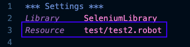

<!DOCTYPE html>
    <head>
        <meta charset="utf-8">
        <meta http-equiv="X-UA-Compatible" content="IE=edge">
        <title>卡琳自動化教學</title>
        <meta name="description" content="想學自動化真的需要先學習程式語言嗎？ 也許有更多其他的選擇喔！！ 進來了解一下 Robot Framework 吧。 也許更適合你喔！！">
        <meta name="keywords" content="Robot Framework, Automation, Automation for beginner, 自動化學習初學者, 自動化簡單易懂, 自動化工具, 卡琳自動化">
        <meta name="viewport" content="width=device-width, initial-scale=1">
        <link rel="stylesheet" href="menu.css">
        <link rel="stylesheet" href="style.css">
        <link rel="stylesheet" href="rwdscreen.css">
        <link rel="icon" type="image/png" href="img/favicon.png">
        <!-- Global site tag (gtag.js) - Google Analytics -->
        <script async src="https://www.googletagmanager.com/gtag/js?id=UA-167416723-1"></script>
        <script>
            window.dataLayer = window.dataLayer || [];
            function gtag(){dataLayer.push(arguments);}
            gtag('js', new Date());
        
            gtag('config', 'UA-167416723-1');
        </script>
        <!-- Global site tag (gtag.js) - Google Analytics -->
            <!-- facebook link -->
            <!-- You can use open graph tags to customize link previews.
            Learn more: https://developers.facebook.com/docs/sharing/webmasters -->
            <meta property="og:url"           content="https://carleenlean.github.io/" />
            <meta property="og:type"          content="website" />
            <meta property="og:title"         content="卡琳自動化教學" />
            <meta property="og:description"   content="想學自動化真的需要先學習程式語言嗎？ 也許 Robot Framework ✌也可以是其中的一個選擇喔！！ 進來了解一下 Robot Framework 吧。 也許更適合你喔！！" />
            <!-- <meta property="og:image"         content="https://www.your-domain.com/path/image.jpg" /> -->
            <!-- facebook link -->
    </head>
    <body>
        <!-- facebook link -->
        <div id="fb-root"></div>
        <script async defer crossorigin="anonymous" src="https://connect.facebook.net/zh_TW/sdk.js#xfbml=1&version=v7.0"></script>
        <!-- facebook link -->
        <h1>卡琳自動化教學 - <br><span class="hid"></span>Robot Framework<span class="hid"> 概念</span></h1>
        <!--Side bar menu-->
        <div class="colorbox">
            <div id="sidenav">
                <a href="index.html" id="introduction">RF 介紹</a>
                <a href="setup.html" id="setup">RF 設定</a>
                <a href="structure.html" id="structure">RF 概念</a>
                <!-- <a href="selenium.html" id="seleniumlibrary">Selenium<br>Library</a>
                <a href="builtin.html" id="builtin">BuiltIn</a>
                <a href="collections.html" id="collections">Collections</a>
                <a href="datetime.html" id="datetime">DateTime</a>
                <a href="dialog.html" id="dialog">Dialog</a>
                <a href="string.html" id="string">String</a>
                <a href="project.html" id="project">範例教學</a> -->
            </div>
        </div>
        <!--Main content-->
        <!-- web counter -->
        <div id="counter">
            <!-- hitwebcounter Code START -->
            <a href="https://www.hitwebcounter.com" target="_blank">
            
            </a>
        </div>
        <!-- web counter -->
        <br>
        <!-- facebook link -->
            <div id="fb">
            <div class="fb-like" data-href="https://carleenlean.github.io/" data-width="" data-layout="button_count" data-action="like" data-size="large" data-share="true"></div>
            </div>
        <!-- facebook link -->
        <div class="wrapper">
            <div class="main">
                <ul class="nobull">
                    <li id="top">Robot Framework 概念：</li>
                        <ul class="bull">
                            <li>A. <a href="structure.html">Robot Framework 檔案內容結構</a></li>
                                <ul>
                                    <li><a href="structure.html#section01">Settings</a></li>
                                    <li><a href="structure.html#variables">Variables</a></li>
                                    <li><a href="structure.html#testcases">Test Cases</a></li>
                                    <li><a href="structure.html#keywords">Keywords</a></li>
                                </ul>
                            <li>B. <a href="locator.html">Robot Framework 網頁元素定位</a></li>
                            <li>C. <a href="terminal.html">Robot Framework 官方文件解析與執行終端</a></li>
                            <li>D. <a href="report.html">Robot Framework 測試結果報告</a></li>
                        </ul>
                </ul>
                <hr>
                <h2 id="section01">Robot Framework 檔案內容結構</h2>
                <p>
                    Robot framework 腳本儲存檔案類型是 ".robot"。例如：test.robot。Robot framework 腳本內容以四個主要結構組成： Settings， Variables， Test Cases 和 Keywords。
                </p>
                <p>每個結構區塊標題是由兩邊各三個星號組成： <em>*** </em> Settings <em>***</em>。</p>
                <h3>*** Settings ***</h3>
                <ul>
                    <li>
                        Settings 這個結構區塊主要是導入目前這個檔案所需要用到的 Library 以及相關的外部連結資源。如果沒有連結相關的 Library 或是資源，執行這個檔案腳本時就會出現失敗的結果。
                    </li>
                        <ul>
                            <li><span class="point">Library</span>: 包含了我們所用到的 Robot Framework Library 或是自己/別人寫的 Library 都可以從這裡導入。例如：目前這個腳本裡面我們所需要用到的關鍵字是 “<em>Open Browser</em>”; Open Browser 是 SeleniumLibrary 裡面的關鍵字。
                                
                            所以我們就必須在這個腳本 Settings 區塊導入 “<em>Library    SeleniumLibrary</em>”。確實導入在腳本當中，執行腳本時才不會出現錯誤。
                            
                            如果沒有正確導入，執行的時候就會出現以下錯誤 “No keyword with name” (找不到關鍵字)
                            
                            正確導入執行時就 PASS 囉！！
                            
                            </li>
                            <li><span class="point">Resource</span>：讓我們主要可以連結外部資源檔案。為了讓我的檔案內容可以更乾淨利落很多時候我會把自訂關鍵字（稍後會寫到）寫在另一個檔案然後用 Resource 連結外部的關鍵字檔案。</li>
                            
                            <li><span class="point">Suite Setup</span>：這裡定義的是這一整組的測試用例 (test suite) 開始之前先執行什麼指令。例如：開始執行這一整組用例（好比說我有 6個測試用例）前，先啟動並登入服務器。那這個指令就會在跑第一個用例之前先啟動服務器，之後就再也不會執行這個指令。</li>
                            <li><span class="point">Suite Teardown</span>：這裡定義的是這一整組的測試用例 (test suite) 結束之後執行什麼指令。例如：這一整組用例（好比說我有 6個測試用例）跑完之後，登出並關閉服務器。那這個指令就會在最後一個（第6個）測試用例跑完之後登出並關閉服務器。</li>
                            
                            <li><span class="point">Test Setup</span>：這裡定義每個測試用例 (test case)開始前先做什麼事情。例如：執行每個測試用例前，先打開瀏覽器。</li>
                            <li><span class="point">Test Teardown</span>：這裡定義每個測試用例 (test case) 結束後要做什麼事情。例如：執行完每個測試用例之後，關閉瀏覽器。</li>
                            
                            <li><span class="point">Documentation</span>: 這裡可以備註這一整套測試用例相關資訊以便讓其他自動化測試人員可以輕易知道這一整個測試用例的目的。</li>
                            <li><span class="point">Timeout</span>: 這裡可以定義在測試用例拋出錯誤以前需要等待多久。</li>
                        </ul>
                </ul>
                <h3 id="variables">*** Variables ***</h3>
                <ul>
                    <li>Variables（變數）: 這個結構區塊可以讓我們設置變數。什麼是變數呢？你可以把它想像成一個儲存箱。可以儲存任何模式的字串在這個儲存箱裡面。在任何地方就可以取用這個儲存箱裡面的資料。設置變數可以讓你在不同地方取用這個變數資料，如果之後想要改變變數的字串，直接在這個變數結構修改一次就可以了。<br>
                    例如：我在 Variables 區塊定義了一個變數 <em>${username}</em> 然後在這個變數儲存一個字串 <em>user01</em>。在 Test Case 的結構區塊直接輸入想要用這個變數 <em>${username}</em> 的位置，當執行到 Input Text 指令時，user01 就自動帶入。</li>
                    
                    你可以看到在範例圖示的第 12 排：
                    <p>
                        <ul class="script">
                            <li>Input Text&nbsp;&nbsp;&nbsp;&nbsp;//*[@id="login-username"]&nbsp;&nbsp;&nbsp;&nbsp;${username}&nbsp;&nbsp;&nbsp;&nbsp;&nbsp;&nbsp;<br><span class="explain">&#8677;解釋: 輸入文字（<em>Input Text</em>）並且在定義網頁的位置（<em>//*[@id="login-username"]</em>）輸入文字，這個文字就會是我們在 Variables 區塊定義的變數 ${username} 也就是 <em>user01</em>&#8676;</span></li><br>
                            <li>現在看不懂沒有關係，後續會說明～</li>
                        </ul>
                    </p>
                    <li>如果要把 “user01” 改成 “coder” 我只需要在 Variables 區塊把 <em>${username}</em> 存在的字串從 "user01" 改成 "coder"。當程式執行 Test Case 區塊 Input Text 指令時，“coder” 就會取代原本的字串 "user01"。</li>
                </ul>
                <h3 id="testcases">*** Test Cases ***</h3>
                <ul>
                    <li>Test Cases（測試用例）: 這個結構區塊是由已定義的關鍵字（Keywords）建立測試用例情境與步驟。</li>
                    <ul>
                        <li>Keywords 導入方式一： Standard library。先是在 Settings 結構區塊定義要導入的 Standard Library。然後即可使用導入 Selenium Library 裡面的關鍵字。 </li>
                        
                        <li>Keywords 導入方式二： 在設定區塊導入 Resource File 設定外部檔案連結。先是在 Settings 結構區塊定義要導入的 Resource。然後即可在 Test Cases 區塊使用導入 keywords 檔案所要用的關鍵字。</li>
                        
                        <li>Keywords 導入方式三： 直接在目前檔案的 Keywords 區塊建立 Keywords 不用在 Settings 進行導入可直接使用關鍵字。 </li>
                        
                        <li><span class="point">Template（測試範本）</span>: 這裡是定義測試範本。例如：網站針對使用者會員名字建立了規格。可能包含了不能空白，不能有特殊符號，不能有數字等等。。。這個時候我們就可以設置一個模板建立幾組會產生無效的註冊結果看是否有問題。</li>
                        
                        <li><span class="point">Tags（標籤）</span>: 標籤可以定義個別測試用例的類別，並且一個測試用例可以定義多個類別。</li>
                        <ul>
                            <li>A. 標籤可以定義這個測試用例嚴重程度，這樣產生報告之後即可知道有多少急需解決的 bug 失敗。有多少個正常處理的 bug 通過。這裡的使用很彈性，可以依據自己想要的報告結果定義。</li>
                            <li>B. 標籤也可以讓我們幫每個測試用例分門別類。比如說我們這一套測試也許有功能測試，整合性測試。那我們就可以特別幫每個測試用例標註該用例是屬於哪一個類型。以便之後輸出的報告可以很容易的統計。</li>
                            <li>C. 如果執行測試報告時只想執行某一部分測試用例則可以指定哪些測試用例是你想要執行的。當然，如果你想要排除某些測試用例也是可以做到的。</li>
                        </ul>
                        <li><span class="point">Documentation</span>: 這裡可以備註這一整套測試用例相關資訊以便讓其他自動化測試人員可以輕易知道這個測試用例的目的。</li>
                        <li><span class="point">Timeout</span>: 這裡可以定義在測試用例拋出錯誤以前需要等待多久。</li>
                    </ul>
                </ul>
                <h3 id="keywords">*** Keywords ***</h3>
                <ul>
                    <li>Keywords: 這個結構區塊可以定義自己要使用的關鍵字。可以把很多測試步驟濃縮成一個關鍵字。然後可以方便重複使用就不用每次要進行同個步驟都要輸入同樣的步驟。例如：一個網站需要登入帳號測試。那就可以設定一個關鍵字 ”登入網站“，然後把所有的測試步驟定義在這個關鍵字裡面。這樣這個關鍵字就包含所有需要登入帳號的測試步驟。每次只要遇到這個情境只要輸入這個關鍵字就可以執行，不用重複輸入多個步驟。</li>
                    <p>以下提供定義以及未定義的例子供參考：</p>
                    <p>
                        <ul class="script">
                            <p>範例一： 定義關鍵字</p>
                            <li id="scripttitle">Login to Yahoo</li>
                            <li>&nbsp;&nbsp;&nbsp;&nbsp;&nbsp;&nbsp;&nbsp;&nbsp;Open Browser&nbsp;&nbsp;&nbsp;&nbsp;https://www.yahoo.com.tw&nbsp;&nbsp;&nbsp;&nbsp;chrome</li><br>
                            <li>&nbsp;&nbsp;&nbsp;&nbsp;&nbsp;&nbsp;&nbsp;&nbsp;Click Element&nbsp;&nbsp;&nbsp;&nbsp;xpath: //*[@id="uh-profile"]</li><br>
                            <li>&nbsp;&nbsp;&nbsp;&nbsp;&nbsp;&nbsp;&nbsp;&nbsp;Input Text&nbsp;&nbsp;&nbsp;&nbsp;xpath: //*[@id="login-username"]&nbsp;&nbsp;&nbsp;&nbsp;user01</li><br>
                            <li>&nbsp;&nbsp;&nbsp;&nbsp;&nbsp;&nbsp;&nbsp;&nbsp;Click Button&nbsp;&nbsp;&nbsp;&nbsp;下一步</li><br>
                            <li>&nbsp;&nbsp;&nbsp;&nbsp;&nbsp;&nbsp;&nbsp;&nbsp;Input Text&nbsp;&nbsp;&nbsp;&nbsp;xpath: //*[@id="login-passwd"]&nbsp;&nbsp;&nbsp;&nbsp;pass01</li><br>
                            <li>&nbsp;&nbsp;&nbsp;&nbsp;&nbsp;&nbsp;&nbsp;&nbsp;Click Button&nbsp;&nbsp;&nbsp;&nbsp;xpath: //*[@id="login-signin"]</li><br>
                            <li>所有登入 Yahoo 網站測試步驟從開啟網頁到登入成功全部都在 “Login to Yahoo” 這個關鍵字裡面。在其他的測試情境裡面如果我需要登入 Yahoo 網站，就只需要輸入關鍵字 “Login to Yahoo” 即可登入 Yahoo 網站。</li>
                        </ul>
                        <ul class="script">
                            <p>範例二： 未定義關鍵字（重複性的情境每次都要重新再打這麼多步驟）</p>
                            <li>Open Browser&nbsp;&nbsp;&nbsp;&nbsp;https://www.yahoo.com.tw&nbsp;&nbsp;&nbsp;&nbsp;chrome</li><br>
                            <li>Click Element&nbsp;&nbsp;&nbsp;&nbsp;xpath: //*[@id="uh-profile"]</li><br>
                            <li>Input Text&nbsp;&nbsp;&nbsp;&nbsp;xpath: //*[@id="login-username"]&nbsp;&nbsp;&nbsp;&nbsp;user01</li><br>
                            <li>Click Button&nbsp;&nbsp;&nbsp;&nbsp;下一步</li><br>
                            <li>Input Text&nbsp;&nbsp;&nbsp;&nbsp;xpath: //*[@id="login-passwd"]&nbsp;&nbsp;&nbsp;&nbsp;pass01</li><br>
                            <li>Click Button&nbsp;&nbsp;&nbsp;&nbsp;xpath: //*[@id="login-signin"]</li><br>
                        </ul>
                    </p>
                </ul>
            </div>
        </div>
        <a href="contact.html" id="contact">問問題</a>
        <p id="back"><a href="#top">回到最上面</a></p>
        <footer>
            Copyright © 2020 黑皮腦袋黑皮生活保留一切權利
        </footer>
        <script src="myScript.js"></script>
    </body>
</html>